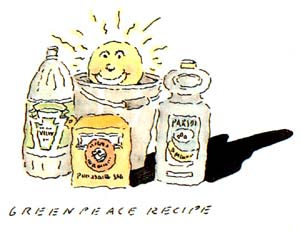

ALTERNATIVES
Cleanliness is next to godliness.
When I decided to stop using harsh chemical cleaning products in my house and to find environmentally safe alternatives, I didn't have to look far. I just called my mother. People who have been cleaning since before synthetic formulas became widely available (after World War II) know what works.
My town's library proved to be a big help too: An entire section is devoted to household hints and advice, much of it from before the '50s ushered in "better living through modem chemistry."
But I also knew that many of the old-time cleaning recipes I'd found were never intended for use with today's synthetic materials and household appliances. Over the past 50 years we've opened our homes to the likes of polyester, Formica, vinyl and myriad other forms of plastic, and we've enlisted the aid of dishwashers and automatic washing machines and dryers.
So, with help from my mother, the library, various environmental groups and some recent, ecologically conscious household-hints books, I experimented. I adapted. I experimented some more. And eventually I came up with my own arsenal of formulas for modern-day biodegradable cleaning.
Believe it or not, you can handle all your day-to-day cleaning with just seven easily available, inexpensive, environmentally benign substances. Baking soda, washing soda, soap flakes, oil soap, vinegar, borax and ammonia will take care of just about any mess. (Ammonia is, of course, dangerous in its concentrated form, when skin contact or breathing the fumes can cause injury. But it's an extremely effective cleaner, and it is not harmful to the environment. Just store it in a safe place well out of the reach of children and use it with care and a clean conscience.)
The first commercial cleaning product I replaced was scouring powder. I use baking soda instead, applied just as you would any of the store-bought products, dampened with a little water. Many commercial scouring powders contain both bleach and phosphates. Bleach, whether chlorine or non-chlorine, contains halogen compounds, which are persistent and toxic in the environment. The stuff may kill germs in the toilet bowl, but it also kills the bacteria that sewage and septic systems need to work properly. Phosphates create foaming in lakes and streams and stimulate algae growth that chokes out other aquatic life.
Baking soda doesn't kill anything, but it does a terrific cleaning job on sinks and tubs. (Unless your fixtures are old and porous. Then you might want to try a commercial powder, such as Bon Ami, that contains no bleach or phosphates.)
Combined with vinegar, baking soda produces an impressive foaming reaction that gives off harmless carbon dioxide gas. I pour a cup or more of vinegar into the toilet bowl, then toss in a handful of baking soda. The kids love the frothing, which scrubs the porcelain. The vinegar, being a mild acid, will strip off hard-water lime deposits if you leave it in for a while. A residual hard-water ring sometimes still shows just above the waterline, where the vinegar solution doesn't reach. But I figure I can live with that in exchange for not having to worry about the poisonous potential of toilet bowl cleaners, which often contain both lye and bleach.
I also use vinegar and baking soda to clean our drains. I simply dump a handful or so of baking soda into the drain, pour in a big shot of vinegar and put the plug in immediately to drive the carbon dioxide down the pipe. I keep the plug in until the fizzing stops, then run hot water down the drain. This cleans and clears the pipes nicely, eliminating the need for corrosive cleaners. Commercial drain cleaners are sufficiently dangerous that the U.S. Consumer Protection Agency has issued a fact sheet warning users about the nasty things the corrosives can do to the human body, inside and out.
VINEGAR by itself is unsurpassed for cleaning faucets. I soak a rag in the liquid and drape it over the fixture for five to 10 minutes to strip off soap and lime deposits. Some vinegar in a bucket of warm water works wonderfully on linoleum that isn't heavily soiled, and it doesn't leave a film. Of course, many people still use vinegar and and water for washing windows. One of my friends, though, says that the solution doesn't work on her windows; she uses ammonia and water instead.
Dr. Olaf Runquist, an organic chemist at Hamline University in St. Paul, Minnesota, explains that this might be because vinegar and ammonia work on different kinds of dirt. As an acid, vinegar will strip off the metallic grit from screens and dirt from the street. Ammonia, which is alkaline, does a better job of removing the fat that accumulates from cooking. Adjust your window cleaning formula accordingly and you won't need to use commercial cleaners, some of which may contain harmful solvents.
Disinfectants, too, often contain dangerous solvents as well as formaldehyde and phenol compounds. Formaldehyde is a carcinogen, and phenol compounds are now known to be extremely toxic and persistent in the environment.
Frequent cleaning and exposure to sunlight and heat should take care of almost all odor and mildew problems if you are patient and persistent.
Vinegar and borax are both effective but mild disinfectants.
Of course, disinfectants are advertised, as is bleach, as germ killers. But advertisers neglect to mention that it's impossible to kill every germ in your house and on yourself, and that you wouldn't want to anyway. There are more germs living in our bodies than there are cells. We are walking ecosystems that need germs in order to function properly. Most germs are beneficial, and harmful ones are better fended off with frequent cleaning and healthy lifestyles than with the indiscriminate use of toxic chemicals.
I don't even worry about germs in the diaper bucket anymore. Instead of bleach, I use about half a cup of borax in a five-gallon bucket of warm water. When the soaking diapers fill the pail, I wash them. This approach doesn't remove stains quite as well as bleaching does, but-again-I'm willing to put up with the stains in exchange for not having bleach in the house or in the sewage system. The borax eliminates the smell just as effectively, and our children have had no problems with diaper rash.
Borax also works as a laundry whitener and freshener. Instead of buying detergent, I use a recipe (from Cheaper and Better: Homemade
Alternatives to Storebought Goods, by Nancy Birnes) that calls for one part borax to one part washing soda and one part soap flakes. For normal loads of wash, use about threefourths of a cup of this mix. If your water is soft, you can cut the amounts of borax and washing soda by as much as three-fourths, or simply vary the formula till it works for you.
THIS MIXTURE works as well as any detergent and smells better. It's especially good on natural fabrics. One word of caution: Before you make the switch from detergent, be sure to run all your clothes through a cycle with washing soda only, to remove the detergent residue. I didn't do this the first time, and my husband now has yellow T-shirts. Also, white clothes that contain synthetic materials may tend to yellow slightly over time with this formula. Counteract this by line-drying clothes in the sun whenever possible. Sunshine is the oldest, and best, bleach and disinfectant known to man.
Having to mix a new batch of this laundry formula from time to time is, I admit, a bit inconvenient. It can also be more expensive than regular detergent (depending on the brand you use). In fact, I wasn't sure it was worth it until I noticed, about a month into the experiment, that after 15 years of low-level acne my face had cleared up. When some houseguests arrived shortly thereafter I decided to switch back to detergent-rather than go through the process of washing away the detergent residue from their clothes-and I immediately broke out. Once back on the soap formula for a month or so, my skin again cleared. Later, I ran out of soap during a stormy weekend and used up the last of the detergent instead. Guess what? The mirror doesn't lie. My face is happier and healthier with soap, and so is the baby's bottom.
If the soap mixture I use seems too expensive or inconvenient to you, try using a phosphate-free detergent that has been on the market for decades (Dreft is a particularly good one). Generally speaking, the longer a brand has been around, the more likely that it's biodegradable. Also, remember that you can usually get by with about half the amount recommended on the package. (If we can't entirely eliminate household chemical pollutants, we can at least greatly decrease the amount we use.
Dish detergents are not significantly different from laundry detergents, but they are harder to replace satisfactorily. My mother remembers how excited women were when commercial dish detergents became available. Instead of having to soak the dishes extensively before washing them, and instead of having to change the water a couple of times and add fresh soap to get the dishes clean, they could simply fill the pan and wash. The suds didn't disappear after only a few minutes.
I tried using both soft soap and soap flakes on our dishes, adding such things as vinegar, lemon juice and washing soda to soften the water and make the suds last. Nothing seemed to work. The dishwater became scummy, and the dishes came out greasy. For a while, I resigned myself to using my old detergent, only in smaller-than-recommended amounts. Then I discovered Murphy's Oil Soap. Made entirely from vegetable oils, Murphy's is biodegradable and cuts grease. It doesn't create any suds to speak of, at least not in our hard water, but it does work.
Other biodegradable oil soaps and dish soaps are available in some areas, most often in natural-food stores or from door-to-door salespeople. just make sure the product is biodegradable and buy the smallest size the first time-so you can be certain that it gets your dishes clean before you purchase a larger quantity.
For floors and other wood surfaces there's no need to use commercial all-purpose cleaners, which may contain phenol compounds, solvents and surfactants. Oil soap was originally intended for and works beautifully on wood. And one friend of mine uses nothing but vinegar and water on her wood finishes, as her family has for years. Do not use ammonia on wood: Over time it can ruin the finish.
AMMONIA is good for almost everything else. I didn't use it for years, because I hated the smell. Then I found a recipe suggested by Greenpeace, the environmental organization: half a cup of ammonia, a quarter cup of vinegar, and a handful of baking soda in a bucket of warm water. It makes a terrific, nontoxic, all-purpose cleaner that is almost odorless. I use it on linoleum, the walls and in the bath room It's also good for scrubbing rugs clean.
For about $4 I can buy a gallon of vinegar, four pounds of baking soda and two quarts of ammonia. This replaces about the same amount of much more expensive scouring powder, all-purpose cleaner, bleach, toilet-bowl cleaner, rug deodorizer, drain cleaner and window cleaner. And because our house is clean and free of chemical smells, we don't need air freshener.
Washing soda is also economical. Borax and soap flakes, however, are not especially inexpensive. On the other hand, they may serve as substitutes for a lot of costly products. They replace disinfectant, laundry detergent and bleach-and in my case, they've eliminated the expense of all the medicinal stuff I used to buy to clear up my face.
IF YOU DECIDE to switch to natural cleaning products, take my advice: Go slowly. If you're like me, cleaning is not something you do for enjoyment; it's a necessity stuffed into the cracks and crevices of your days as you find the time. Trying to make the switch to biodegradable formulas all at once is sure to be frustrating and time-consuming, because it will take some trial and error to find out precisely what works in cleaning your house. So be patient (but persistent), and wean yourself from commercial cleaners gradually. It's better than getting fed up halfway through and quitting completely.
If you run into problems, or if you're looking for an alternative to a product not mentioned here, rest assured there's plenty of help available. For starters, call your parents-or your grandparents, your in-laws or the nice older couple down the road-and ask them how they used to clean their homes (and maybe still do).
Many environmental groups such as Greenpeace, Citizens for a Better Environment, Environmental Action and The Ecology Center have lists of ideas and references. Lately, there has been an increase in the number of new biodegradable cleaning products entering the marketplace. There are two of these that I especially like: Ecover dish soap and Schwan's laundry soap. Biodegradable cleaning products, however, can still be difficult to find, often come packaged in plastic and are usually more expensive than homemade solutions.
There are also a number of excellent books about homemade alternatives to commercial cleaners, though not all of them focus on the issue of environmental safety. I use Cheaper and Better, by Nancy Birnes,The Non-Toxic Home, by Debra Lynn Dadd, and Blueprint for a Green Planet, by John Seymour and Herbert Girardet. Here's to cleanliness, inside and out.
Ann Larkin-Hansen is a freelance writer who cleans up after an assortment of boys and pets in Marshfield, Wisconsin.
|
 |
|
|
|
|
|
|